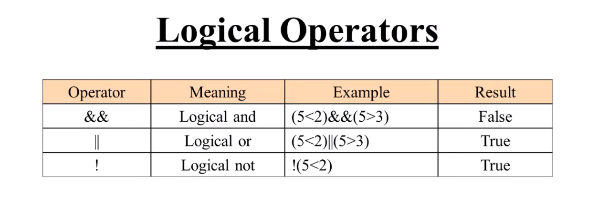

Q.1 What is JavaSCript? How to use it?
Q.2 What are the ways to Apply JavaScript ?
- Embedding code: <script>... </script> tag ke bich mein JavaScript code add karna.
- External Files: JavaScript ki ek alag external file bana kar usme JavaScript add karna.
Q.3 Features of Javascript?
Q.4 Which company developed JavaScript?
Q.5 How many type of varibale in js?
Three types of Variable -
- Var Var ko Re-declear or Re-assign dono kar sakte hai.
- Let : Let ko Re-declear nahi kar sakte lekin Re-assign kar sakte hai.
- ConstConst ko Re-declear or Re-assign dono hi nahi kar sakte.
Q.6What is Javascript Event ?
Ans JavaScript event wo hote hai jo input mein user ke instruction ke anusar hote hai or output mein pratikriya dete hai. .
> Many type of event in JavaScript-
- onClick
- onBlur
Q.7How to select tag in class and id?
Ans. In JavaScript agar hame kisi "class" ke data ko run karwana hai to "document.getElementByClassName"
Or agar kisi "ID" ke data ko run karwana hai to "document.GetElementByID"
Q.8What are undeclared and undefined variables?
Ans. Undeclared variables:- Yeh wo variables hote hai jise nahi declear kiya hota or nahi koi value assign ki hoti
Undefined variables:- Yeh wo variables hote hai jinko declear ho kar dete hai pr koi value assign nahi karte hai
Q.9What are all the types of Pop up boxes available in JavaScript?
Ans. Popup boxes hamare page ko alert karane ke liye use me aate hai.
- Alert
- Prompt
- Iska use hum user se inforamtion collect karne ke liye karte hai
- Confirm
- Yeh kisi bhi chiz ke confirmation ke liye use karte hai.
Ise hum warning massage ke roop me use kar sakte hai.(For Example - Agar ham kisi se koi form bharwa rahe hai to or wo koi info fill nahi kare to use ek warning alert show ho.)
Q.10 What is Hoisting in Js?
Ans.
Q.11 How manay type of Operators in js and Every operator and exmaple?
Ans.
- Assignment Operators
- Airthmatic Operators
- Comparison Operators
- Logical Operators 


Q.12What is Condition statement ?
Ans.Condition statement JavaScript ke behavior ko control karta hai. Or ye determine karta hai ki code tukdo me run ho sakta hai ki nahi.
Condition ke bases pe code run karta hai.
Condition me ek hota hai "If" jo "True" represent karta hai or ek hota hai "Else" jisme "If" condition ka opposite hota hai ki "agar ("If") ye nahi to ye("Else")